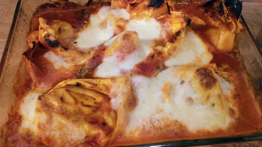

Gooey pasta bake
An easy super for two - just layer the pasta and sauce and bake.
Ingredients
- 500 g carton Neapolitan sauce
- good handful fresh basil leaves
- 250 g fresh stuffed spinach and riccota tortellini
- 100 g mozzarella cheese, sliced
- 2 tbsp freshly grated parmesan cheese
- 1 tbsp pine nuts
Instructions
- Preheat the oven to 160°C/Gas 4. Tip the pasta sauce into a large bowl and thin it down with 100 ml water. Scatter in the basil leaves and torellini, season and give it all a really good stir.
- Divide half of the pasta mixture between two gratin dishes and tear half of the mozzarella over them. Spoon the rest of the pasta mixture on top, press the pasta down into the sauce, then tear the remaining mozzarella over the sauce and scatter with the parmesan and pine nuts.
- Put the dishes on a baking sheet to catch any spills and bake for 25-30 minutes until golden and bubbling.
Source
BBC Good Food: Pasta and Noodle DishesShort URL